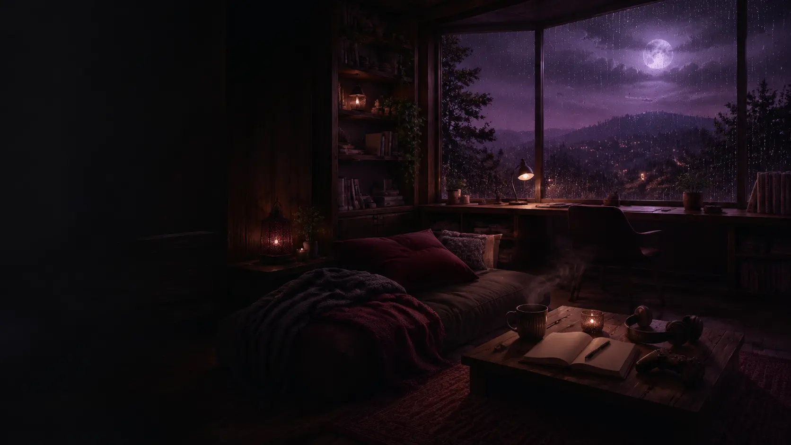
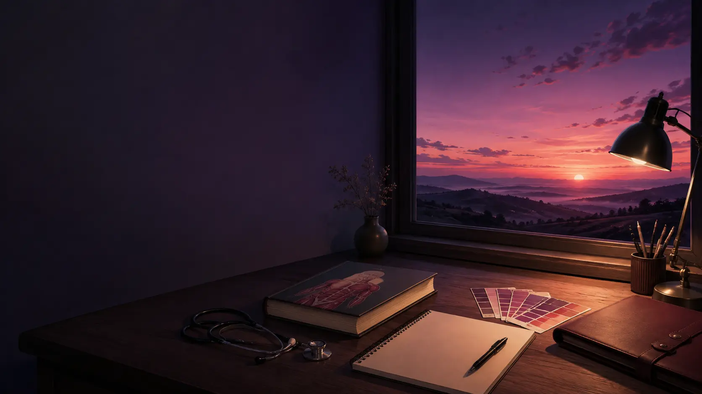

LO-FI NO AR
abrir ↗
Lofi Girl — study radio
calma + foco · YouTube
A música nunca começa sozinha. Você escolhe a hora do play.

seu espaço
Escolhe uma música e fica à vontade. Aqui tudo pode ir mais devagar.
calma + foco · YouTube
A música nunca começa sozinha. Você escolhe a hora do play.
meu diário
Uma página de cada vez, salva somente neste navegador.
modo pausa
Escolhe uma coisa. Um minuto já conta.
Inspire devagar e solte o ar sem pressa.
Não será salvo. A frase desaparece junto com a bolha.
Ajuste o quanto a chuva aparece no seu quarto.
Uma pausa curta, um bloco de foco ou só alguns minutos sem cobrança.
Perceba cinco coisas que você consegue ver. Não precisa nomear todas depressa.
passatempos
Três jogos simples, sem anúncios e sem ranking.
Encontre os seis pares no seu tempo.
Toque nas luzes que aparecem. É só para desligar a cabeça um pouco.
Arraste ou toque nos quadradinhos para acender seu jardim. Ele fica salvo.
memórias
Prints e fotos salvos neste dispositivo.
Seu baú está pronto.
O backup reúne diário, lembranças, listas, configurações e fotos. Ele é o que permitirá mudar para a hospedagem gratuita sem perder tudo.
As fotos não são enviadas para uma galeria pública. Se o navegador for limpo ou você trocar de aparelho, use o backup para recuperar.
seus universos
Anime, mangá, jogos e música para cada clima.

Esta paisagem é só sua: original, sem copiar personagens ou cenas de anime.
Um lugar bonito para guardar tudo que você já assistiu.
Talvez construir sem pressa. Talvez explorar. Talvez só passear.
Uma noite para experimentar mundos diferentes.
Colocar bloco por bloco até a cabeça ficar mais quieta.
Uma aventura pequena que sempre vira uma história.
Explorar, montar um canto e cuidar do seu mundo.
Personagens, paisagens e uma viagem longa pelas estrelas.
Cavalgar sem pressa e deixar o cenário contar a noite.
Escolhe uma sensação. A música continua sendo sua decisão — nada toca sozinho.
Anime, mangá, jogo, filme — escreve do seu jeito.
seu caminho
Não precisa resolver tudo. Encontra apenas o próximo passo.

Você já terminou etapas importantes. Agora é tempo de esperar o resultado e continuar inteiro.
Primeiro separa. Depois decide.
Aguardando o resultado.
Um objetivo construído sem precisar correr.
Habilidades que continuam com você.
Edite e marque só o que fizer sentido agora.
Escreva algo que você vai querer lembrar quando essa espera acabar.
privado e salvo neste navegador